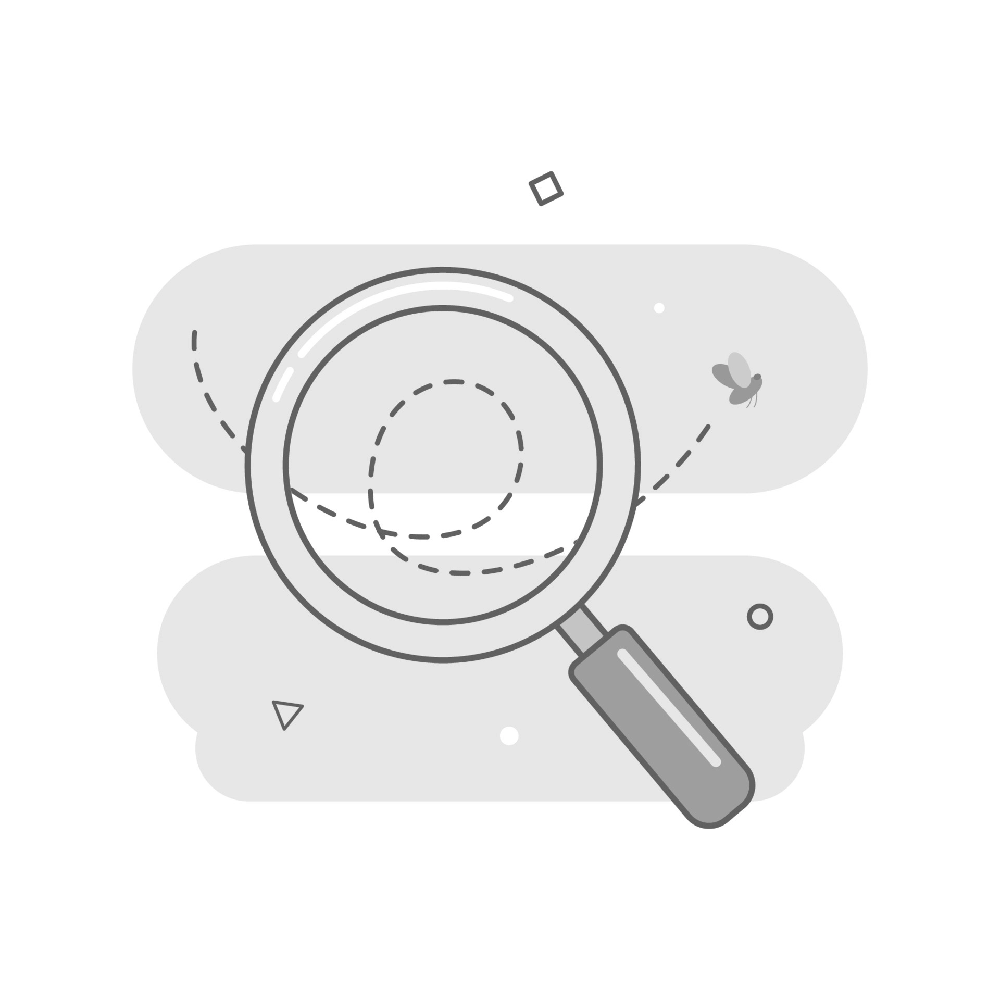

<section>
  <button mat-raised-button color="primary" routerLink="/tarefas">
    Voltar
  </button>
  <div class="not-found">
    
  </div>
  <div class="container">
    <p>Ops... página não encontrada</p>
    <mat-icon color="primary">error</mat-icon>
  </div>
</section>
